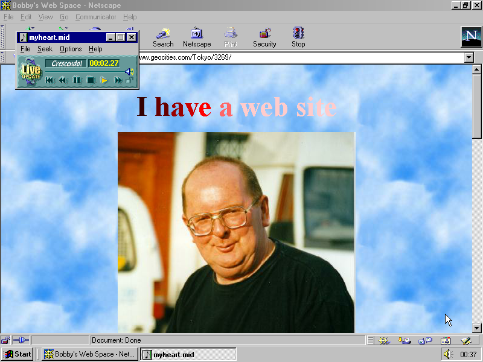

One Terabyte of Kilobyte Age is a project by artists Olia Lialina and Dragan Espenschied that is centered around the preservation and restoration of websites from GeoCities, the early internet’s agora of vernacular design.
Founded in 1994, GeoCities was a hugely important service on the early web, offering users free hosting for their own web pages in exchange for serving banner ads to all visitors. Purchased by Yahoo! in 1999, its data was nearly lost when the platform was shuttered in 2009. Archive Team, a volunteer brigade of archivists, managed to rescue nearly a terabyte of GeoCities pages prior to the shutdown, sharing this data as a torrent. Lialina and Espenschied began working with the GeoCities archive as part of their reconsideration of the cultural value of “Digital Folklore,” the amateur web practices that make up a significant but much-derided part of internet culture.
One Terabyte of Kilobyte Age is a body of work, including blogs and gallery-based projects, based on the nearly ten years of research done by Espenschied and Lialina on the ruins of GeoCities.
For their tumblr One Terabyte of Kilobyte Age Photo Op, Espenschied and Lialina created a system that automatically generates screenshots of GeoCities pages, reconstructed in period-appropriate browsers.
These screenshots are posted to tumblr at a rate of one every 20 minutes. In a 2014 blog post, the artists reported having enough material to generate upwards of 300,000 screenshots.
Alongside this, Espenschied and Lialina write about their research on the GeoCities Research Institute blog. There, they publish analyses of GeoCities trends and vernacular, interviews with users, and share discoveries from the archive.
Screenshot of a cutsom research interface used by the GeoCities Research Institute, displaying instances of a widely circulated GIF of Felix the Cat.
One specimen that has been the subject of the Institute’s research is the famous animated image known as Peeman.gif. Lialina and Espenschied conducted a longitudinal study of the usage of Peeman.gif across their GeoCities archive, and Lialina created a variety of visual representations of their findings.
“Peeman can only fulfil his purpose when combined with a second image which he can pee upon—a fate suffered by Britney Spears, Microsoft, Netscape, Apple as well as by various sport teams, Stalin, Hitler and Hanson.” — Olia Lialina
Peeman.gif (also known as peeguy.gif, peepee.gif or piss.gif), author unknown, late 1990s.
In 2014, Lialina and Espenschied restored the websites behind the three screenshots that were the most popular on tumblr: “I have a website,” “Cute Boy Site,” and “Divorced Dads Page.” These pages exemplify the guileless, homemade aesthetic of the early net, replete with neon and animated GIFs, and written in a welcoming second-person tense.

“I have a web site” from Dragan Espenschied & Olia Lialina, One Terabyte of Kilobyte Age Photo Op, 2013–ongoing. Restoration of GeoCities web page. Screenshot, 2013, Netscape 4.51 on Windows 2000.
“Cute Boy site” from Dragan Espenschied & Olia Lialina, One Terabyte of Kilobyte Age Photo Op, 2013–ongoing. Restoration of GeoCities web page. Screenshot, 2013, Netscape 4.51 on Windows 2000.
The One Terabyte of Kilobyte Age body of work also includes Lialina’s slideshow diptych Give Me Time/This Page is No More (2015–ongoing), which documents two phases in the life cycle of GeoCities websites.
One projection features screenshots of pages that promise further development; the other displays screenshots of pages announcing that they have been abandoned.
Olia Lialina, Give Me Time/This Page is No More, 2015. Installation view, “The Art Happens Here: Net Art’s Archival Poetics,” New Museum of Contemporary Art, January 22–May 26, 2019,
The care with which Lialina and Espenschied treat such artefacts in terms of technical restoration and contextual research belies their seeming frivolousness, emphasizing the underlying dignity common to all kinds of folk art.
“Users’ endeavors, like glittering star backgrounds, photos of cute kittens and rainbow gradients, are mostly derided as kitsch or in the most extreme cases, postulated as the end of culture itself. In fact, this evolving vernacular, created by users for users, is the most important, beautiful and misunderstood language of new media.” —from DIGITAL FOLKLORE